Собрать стенд
Генератор ЭМП, датчик поля и тестируемая сеть.
Научно-Исследовательский университет ИТМО | P3209
Сетевые линии часто идут рядом с блоками питания, силовыми кабелями, двигателями, зарядками и плотными кабельными жгутами. Это создает условия для возникновения электромагнитных помех, влияющих на работу сетевого оборудования. Особо актуально в нынешнеее время при использовании глушилок.
Падает пропускная способность, растут потери пакетов, появляются нестабильность соединения и задержки.
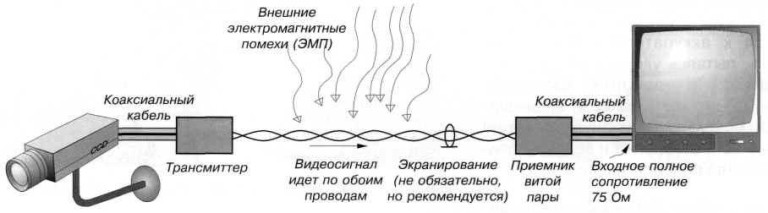
Генератор ЭМП, датчик поля и тестируемая сеть.
Синхронно менять режим помехи и запускать измерения.
Оценить деградацию UTP и STP по сетевым метрикам.
Шаг 1
Считаем силу тока у генератора помех:
P - мощность источника помехи: берем 2000 Вт исходя из кол-ва батареек.
U - напряжение питания- 220 В.
I - ток, который создает магнитное поле вокруг проводника или катушки.
B(r) - магнитная индукция на расстоянии r; дальше считаем ее по закону Био-Савара.
Шаг 2
μ0 = 4π · 10-7 Гн/м. В воздухе μr ≈ 1, значит B ≈ μ0H.
B(r) - магнитная индукция в точке на расстоянии r от источника.
μ0 - магнитная постоянная, задает связь между током и полем в воздухе.
r - расстояние от проводника до кабеля: чем оно больше, тем меньше поле.
Поле обратно пропорционально расстоянию. Поэтому разница между 8 см и 14 см в эксперименте существенна.
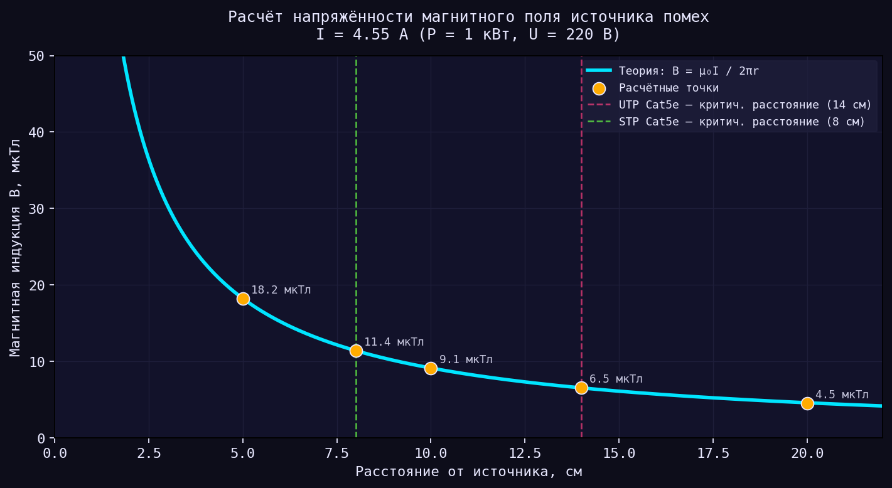
Шаг 3
| R | B |
|---|---|
| 5 см | 36,4 мкТл |
| 8 см | 22,8 мкТл |
| 10 см | 18,2 мкТл |
| 14 см | 13 мкТл |
| 20 см | 9 мкТл |
Шаг 4
Контур образуют два проводника пары:
A - площадь контура, через который проходит магнитное поле.
d - расстояние между проводниками пары, L - длина участка кабеля.
Φ - магнитный поток: чем больше B и A, тем сильнее возможная наводка.
Шаг 5
Если поток меняется синусоидально:
Φ(t) - магнитный поток через контур витой пары в момент времени t.
Φ0 - амплитуда потока, ω - угловая частота изменения поля.
f - частота помехи; чем она выше, тем больше наведенная ЭДС.
ℰ - наведенное паразитное напряжение в линии.
В линии появляется паразитное напряжение. Оно мало само по себе, но становится опаснее при резких фронтах и высокочастотных гармониках.
Витая пара частично компенсирует наводку, но неоднородное поле и неидеальная скрутка оставляют остаточный шум.
Шаг 6
Дифференциальная амплитуда полезного сигнала порядка 1 В:
SNR - отношение полезного Ethernet-сигнала к наведенной помехе.
Uсигн - амплитуда полезного дифференциального сигнала, берем около 1 В.
Ethernet-трансформаторы хорошо подавляют низкую частоту 50 Гц, но MOSFET с катушкой создает короткие импульсы. Их высокочастотные гармоники хуже подавляются и попадают в рабочую полосу приемника.
Защита линии
В соседних полувитках наводки имеют противоположные знаки и частично компенсируются. Чем равномернее скрутка, тем лучше подавление.
Фольга и экран создают дополнительный путь для наведенных токов и уменьшают поле внутри кабеля, особенно в высокочастотной области.
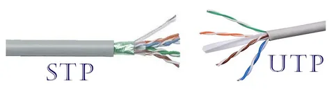
Практическая часть · сборка
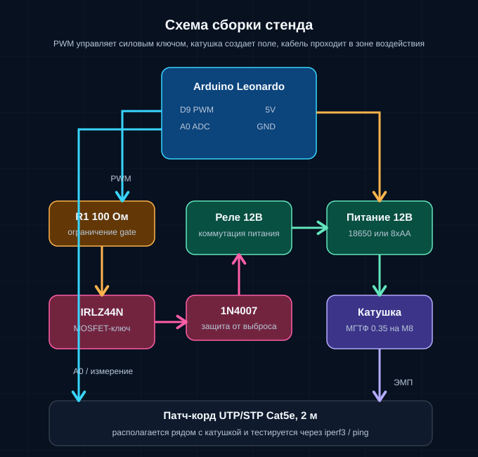
Arduino Leonardo формирует PWM-сигнал, который задает режим работы силового ключа.
IRLZ44N коммутирует ток через катушку, а диод защищает схему от выбросов самоиндукции.
Кабель UTP/STP проходит рядом с катушкой, после чего оценивается сетевой отклик.
Материалы
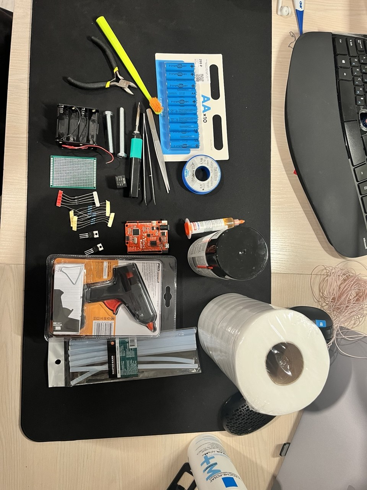
Этап 1
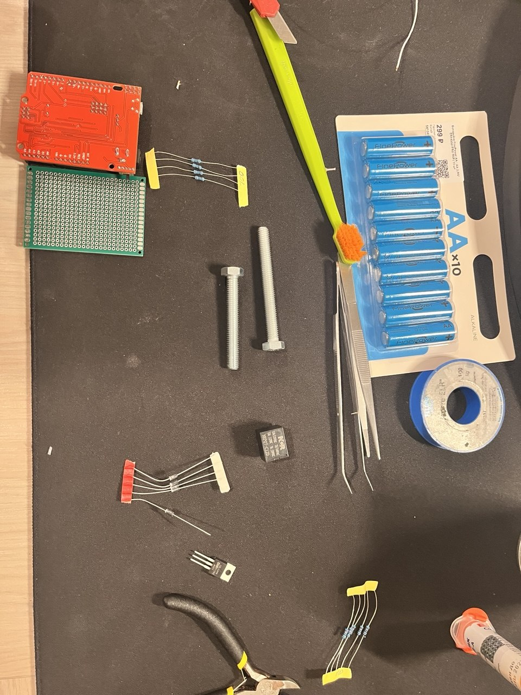
Разложили плату, ключ, диоды, резисторы и питание перед пайкой.
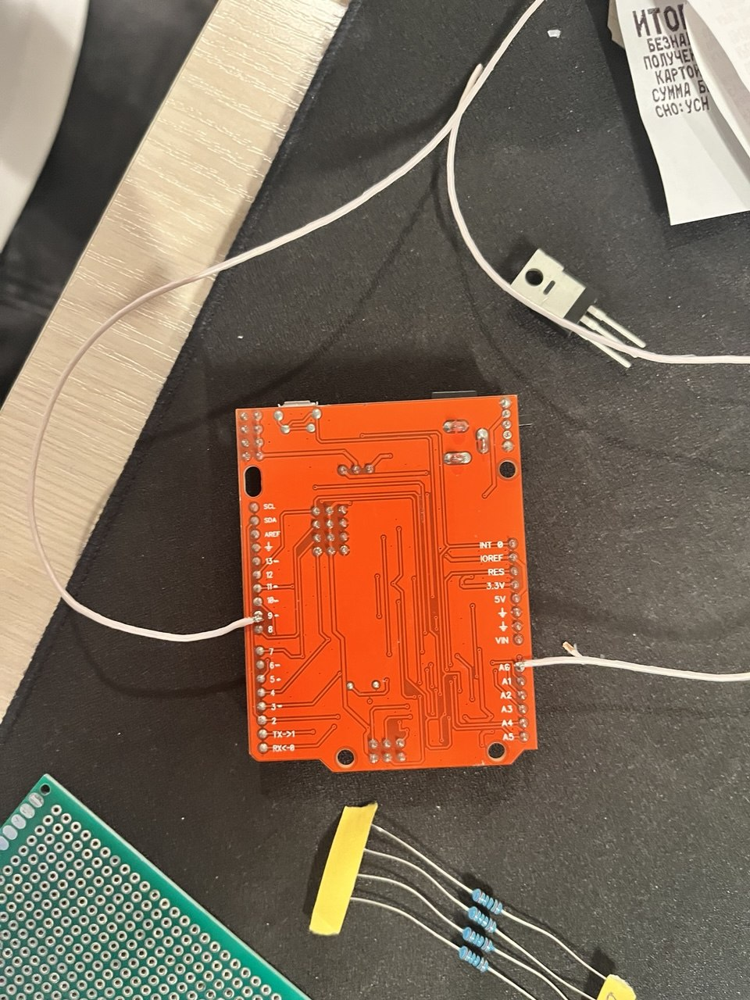
Подпаяли линии для подключения к контроллеру.
Этап 2
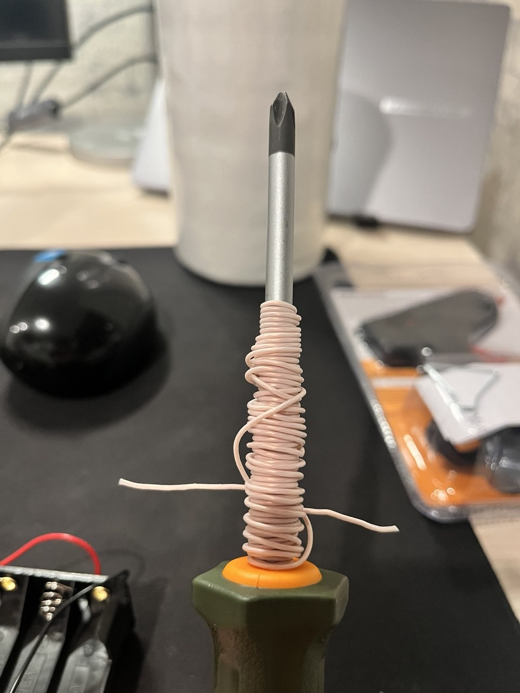
Провод МГТФ 0.35 намотан на отвертку, мы произвели 108 витков, чтобы собрать катушку. Таким образом мы получили воспроизводимый источник поля. После намотки, аккуратно сняли катушку с отверткию.
Катушку залили жидким клеем, используя клеевой пистолет. Таким образом у нас получилась надежная конструкция.
Этап 3
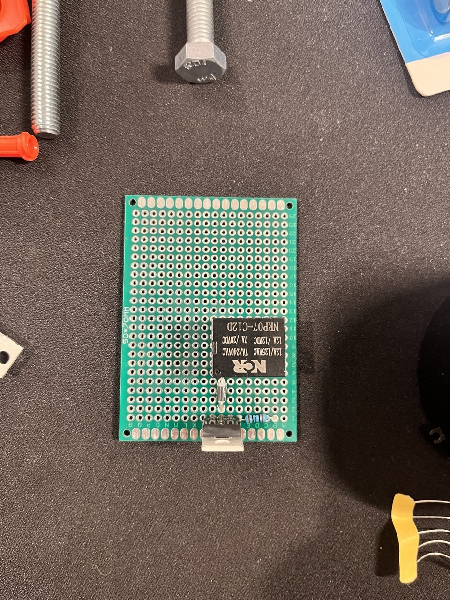
К плате припаяны ключ, реле, защитный диод и силовые соединения.
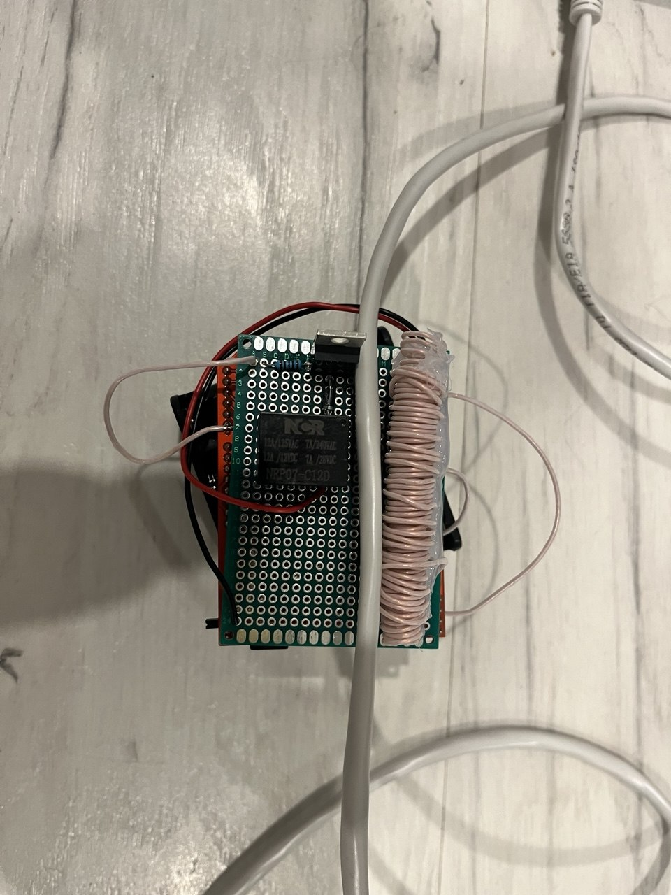
Припаяли катушку. Теперь патч-корд будет проходить максимально рядом с катушкой.
Этап 4
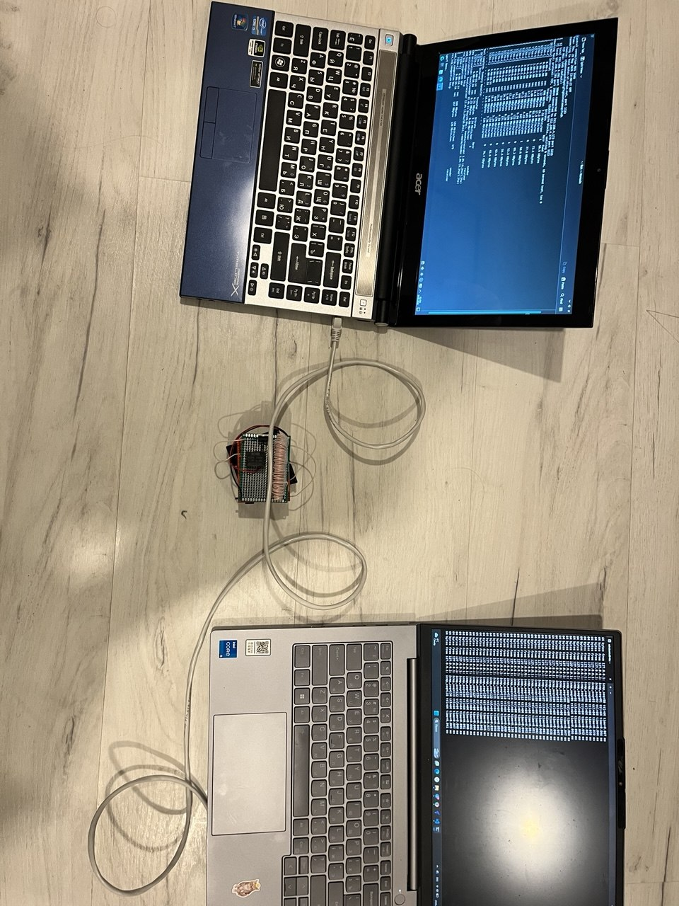
Два ноутбука соединены патч-кордом, который проходит через область действия катушки.
Для первоначального тестирования использовались iperf3 и ping: скорость, потери пакетов и задержка. Затем обернули в приложение.
Одинаковая процедура повторялась для UTP и STP, чтобы сравнить устойчивость кабелей.
C++ · датчик
const int PIN_EMI_SENSOR = 34;
const int ADC_SAMPLES = 32;
const float ADC_REF_MV = 3300.0f;
const float ADC_MAX = 4095.0f;
float readEMI_mV() {
long sum = 0;
for (int i = 0; i < ADC_SAMPLES; i++) {
sum += analogRead(PIN_EMI_SENSOR);
delayMicroseconds(200);
}
float avg = (float)sum / ADC_SAMPLES;
return (avg / ADC_MAX) * ADC_REF_MV;
}ADC считывает напряжение с датчика поля, подключенного к аналоговому входу.
Усреднение сглаживает шум и делает показание устойчивым для сравнения режимов.
Сырое значение ADC переводится в милливольты, чтобы записывать физически понятную величину.
C++ · измерительный цикл
void setup() {
Serial.begin(115200);
analogReadResolution(12);
analogSetAttenuation(ADC_11db);
setupPWM(50, 0);
Serial.println("READY");
}
void loop() {
if (Serial.available()) {
String cmd = Serial.readStringUntil('\n');
parseCommand(cmd);
}
if (millis() - lastEMISend >= 500) {
lastEMISend = millis();
float emi = readEMI_mV();
Serial.print("EMI:");
Serial.println(emi, 2);
}
}12-битное разрешение и диапазон до 3,3 В дают шкалу 0-4095 для пересчета в мВ.
Контроллер принимает команды по Serial и каждые 500 мс отправляет строку вида EMI:123.45.
Python-скрипт получает это значение и передает приложению.
Результаты
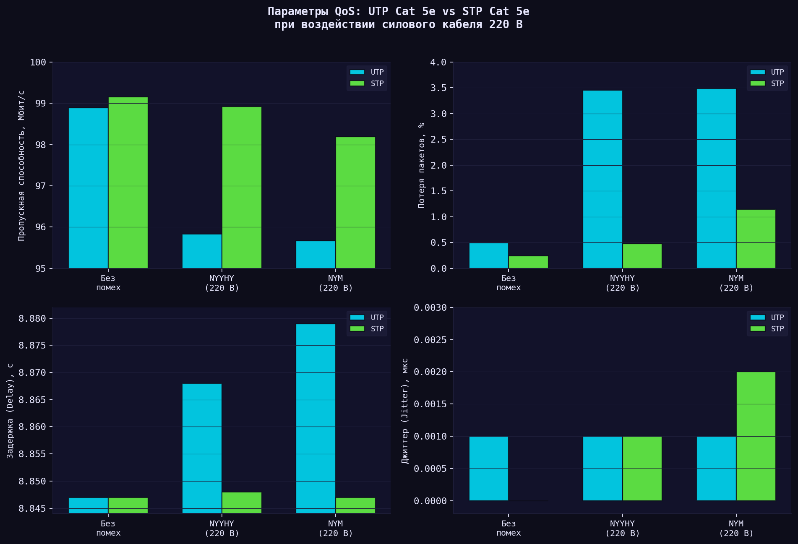
| Показатель | UTP | STP |
|---|---|---|
| Throughput без помех | 98,892 | 99,152 |
| Throughput режим B | 95,670 | 98,192 |
| Потери без помех | 0,496% | 0,240% |
| Потери режим B | 3,488% | 1,148% |
При сильном воздействии STP теряет меньше скорости и дает примерно в 3 раза меньшие потери пакетов.
Количественный вывод
Packet Loss: 0,50% → 3,49%, рост примерно в 7 раз.
Packet Loss: 0,24% → 1,15%, ниже порога 5%.
Визуализация
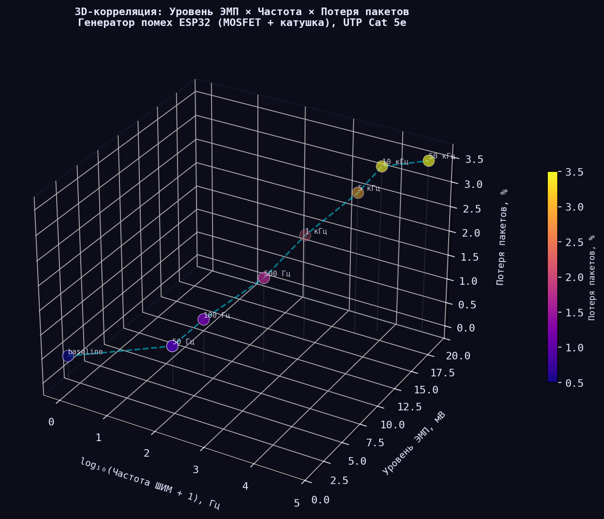
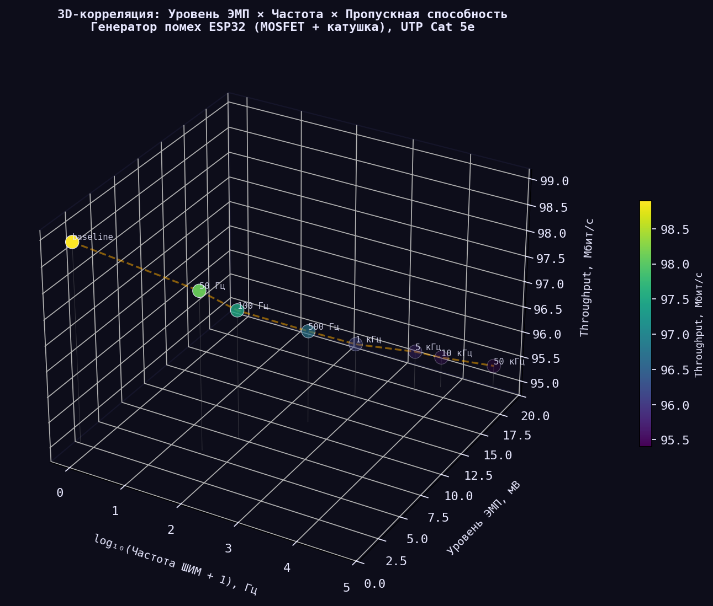
Пороговые значения
| Параметр | UTP Cat 5e | STP Cat 5e |
|---|---|---|
| Критическое расстояние до источника | <14 см | <8 см |
| Рост потерь пакетов в режиме B | до 3,49% | до 1,15% |
| Снижение пропускной способности | до 3,25% | до 0,97% |
| NEXT на 100 МГц | 44-54 дБ | 46-58 дБ |
| Где ниже затухание | 1-10 МГц | >30 МГц |
Финал